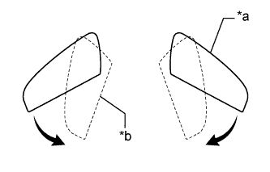

НАРУЖНОЕ ЗЕРКАЛО ЗАДНЕГО ВИДА > ПРОВЕРКА БЕЗ СНЯТИЯ С АВТОМОБИЛЯ |
| 1. ПРОВЕРЬТЕ ОТВОДНОЕ ЗЕРКАЛО С ЭЛЕКТРОПРИВОДОМ |
Поверните замок зажигания в положение ACC.
|  |
Проверьте работу механизма отвода при нажатии переключателя отвода в каждом положении корпуса наружного зеркала.
Переместите зеркала в положение для вождения.
Нажмите переключатель отвода.
Убедитесь, что правое и левое зеркала перемещаются из положения для вождения в убранное положение.
| *a | Положение для вождения |
| *b | Убранное положение |
Переместите зеркала в положение для вождения.
Переместите вручную одно из зеркал в переднее положение.
Нажмите переключатель отвода.
Убедитесь, что зеркало перемещается из переднего положения в убранное положение.
Убедитесь, что другое зеркало перемещается из положения для вождения в убранное положение.
| *a | Положение для вождения |
| *b | Убранное положение |
| *c | Переднее положение |
Переместите зеркала в положение для вождения.
Переместите вручную одно из зеркал в убранное положение.
Нажмите переключатель отвода.
Убедитесь, что зеркало перемещается из положения для вождения в убранное положение.
| *a | Положение для вождения |
| *b | Убранное положение |
Переместите зеркала в убранное положение.
Нажмите переключатель отвода.
Убедитесь, что правое и левое зеркала перемещаются из убранного положения в положение для вождения.
| *a | Положение для вождения |
| *b | Убранное положение |
Переместите зеркала в убранное положение.
Переместите вручную одно из зеркал в положение для вождения.
Нажмите переключатель отвода.
Убедитесь, что зеркало перемещается из убранного положения в положение для вождения.
| *a | Положение для вождения |
| *b | Убранное положение |
Проверьте работу наружного зеркала при управлении переключателем отвода и изменении положения замка зажигания.
Выключите зажигание во время перемещения корпуса зеркала и убедитесь, что зеркало немедленно останавливается.
Повторите рассмотренный выше шаг. На этот раз включите зажигание (ACC) и нажмите переключатель отвода зеркал. Убедитесь, что зеркало начинает перемещаться в противоположном направлении.
Проверьте работу наружного зеркала, когда его движение ограничивается препятствием.
Во время перемещения зеркала в убранное положение или положение для вождения задержите его рукой. Убедитесь, что зеркало прекращает движение.
Нажмите переключатель отвода, когда зеркало остановлено на полпути. Убедитесь, что зеркало начинает перемещаться в направлении, противоположном тому, в котором оно двигалось до остановки.
| 2. ПРОВЕРЬТЕ ОБОГРЕВАТЕЛЬ ЗЕРКАЛА |
Установите замок зажигания в положение ON (ВКЛ).
Убедитесь, что при нажатии выключателя обогревателя заднего стекла включается индикатор, и поверхность зеркала нагревается.
Убедитесь, что по истечении приблизительно 15 минут индикатор гаснет, и обогреватель зеркала выключается.